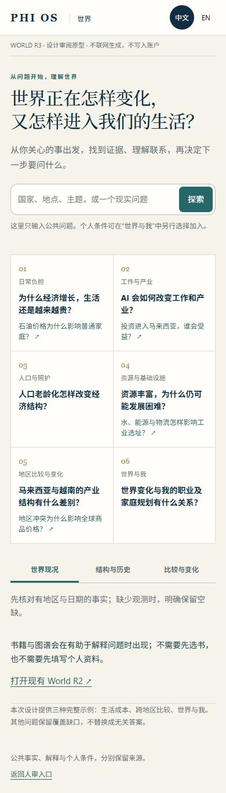
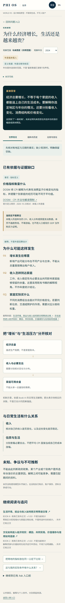
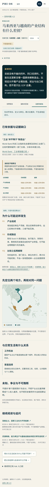
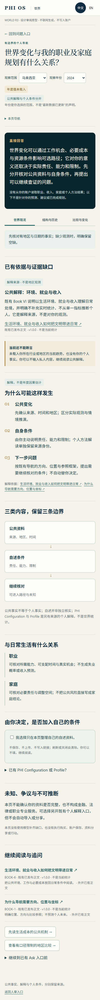
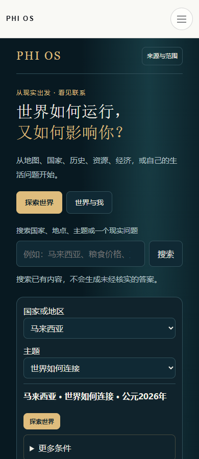
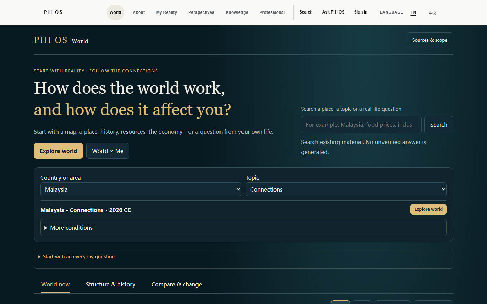

2026-10-20 · SUBMITTED_FOR_HUMAN_REVIEW · 本地main 510eee069a19a04d31acd6e7d71a201dac83cfb3
Gate1审计已获Human ACCEPT。Gate2中英桌面/390px原型与三种完整答案设计已交付，等待明确设计接受；Gate3未开始，线上运行/实时数据能力仍未由本轮证明。下方Gate1审计原状态文字保留为历史证据。
READY_FOR_HUMAN_REVIEW · Gate 1 ACCEPT 保持。Gate 2 全面答案设计未获接受；本次是纠偏 successor，Gate 3 未授权。
三道真实问题：石油与家庭 · 增长与家庭 · 资源与富裕。页面内可切换 English；复用下方桌面/390px预览控制。展开每题“核对原文段落与相关图示”，阅读全文和真实来源位置。
General mechanisms remain answerable without local annual statistics. Published interpretation, conditional synthesis and missing observations stay separate. This is a curated offline design, not general semantic retrieval.
无产品源码修改、无新文章、无 R2 删除、无 provider、无 D1 写入、无提交/推送/部署。下方旧 Gate 2 记录是历史设计，不代表本轮已获 Human ACCEPT。
READY_FOR_HUMAN_REVIEW · Human ACCEPT PENDING。Gate1已由本轮用户明确接受；Gate3未授权、未开始。此候选只在review目录，不改线上World/R2/Search/Ask。
原型可直接打开，无需服务器；内置现有正文来源身份与R2几何，CSP禁止联网执行。不是实时回答服务。
选择示例与语言；切换尺寸会重新载入所选示例。手机也可直接打开上方原型链接。
| 项目 | 本轮结果 | 没有宣称 |
|---|---|---|
| 布局 | 16/16：4页×中英×1440/390，未见横向溢出、文字裁切、空卡、broken image | 不是生产或屏幕阅读器认证 |
| 行为 | 4组问题/年份/尺度返回刷新、键盘、未知问题保留、私人清除；另4组公共上下文变化后清除 | 不是修好了线上R2状态 |
| 来源 | 5份既有双语正文的版本/hash核对，DOSM CPI与World Bank工业定义已核对 | 没有接通年度专题数据或自动更新 |
| 视觉 | 复用R2概化位置几何；解释关系用HTML层表达，未新增R2图像 | 不把底图/插画当统计证据 |
| 回答 | 三份完整且有边界的设计页；另外七问保留缺口 | 不等于十问题现实回答能力PASS |
官方定义仅用于解释指标：DOSM CPI metadata；World Bank industry definition。没有抓取年度数值或生成假涨幅。已发布书稿属于解释来源，不是现实统计。
16份代表性最终截图：4267645 bytes；含保留失败诊断共17份PNG／4641217 bytes。全部路径、用途、摘要及归档约束见manifest；未删除截图。




| 页 | 语言 | 宽度 | 截图路径 |
|---|---|---|---|
| home | zh-Hans | 1440 | tools/review/world-r3/gate2/home-zh-Hans-1440.png |
| cost | zh-Hans | 1440 | tools/review/world-r3/gate2/cost-zh-Hans-1440.png |
| compare | zh-Hans | 1440 | tools/review/world-r3/gate2/compare-zh-Hans-1440.png |
| personal | zh-Hans | 1440 | tools/review/world-r3/gate2/personal-zh-Hans-1440.png |
| home | en | 1440 | tools/review/world-r3/gate2/home-en-1440.png |
| cost | en | 1440 | tools/review/world-r3/gate2/cost-en-1440.png |
| compare | en | 1440 | tools/review/world-r3/gate2/compare-en-1440.png |
| personal | en | 1440 | tools/review/world-r3/gate2/personal-en-1440.png |
| home | zh-Hans | 390 | tools/review/world-r3/gate2/home-zh-Hans-390.png |
| cost | zh-Hans | 390 | tools/review/world-r3/gate2/cost-zh-Hans-390.png |
| compare | zh-Hans | 390 | tools/review/world-r3/gate2/compare-zh-Hans-390.png |
| personal | zh-Hans | 390 | tools/review/world-r3/gate2/personal-zh-Hans-390.png |
| home | en | 390 | tools/review/world-r3/gate2/home-en-390.png |
| cost | en | 390 | tools/review/world-r3/gate2/cost-en-390.png |
| compare | en | 390 | tools/review/world-r3/gate2/compare-en-390.png |
| personal | en | 390 | tools/review/world-r3/gate2/personal-en-390.png |
原型构建HEAD aad8a594781b991fe43286301876c31c5e56244f；交付快照HEAD aad8a594781b991fe43286301876c31c5e56244f（其他窗口可推进main，候选与依赖按摘要识别），独立原型候选摘要 ccb562dc7e7ed878178ab51f425b18a3cc0bf7b0d29d336ce6ae94c6fd522ff6。所有人审尚待明确设计接受。其他窗口持续变更保留；provider0/USD0，生产D1写0、R2删除0、commit/push/deploy0。首轮连接箭头宽度误报与诊断保留；最终文字布局检查针对实际文字盒。
| ID | 能力 | 状态 | 证据 | 发现 | 路径／验证 |
|---|---|---|---|---|---|
| A01 | 地图与地区 | EXISTING | VERIFIED | 176个选择范围、国家选择、地图缩放及键盘路径已有；底图版本不是现行边界证明，更不是主题热力层。 | assets/js/pages/civilization-atlas/world-experience-r2.js:104; content/civilization-atlas/geography/world-selection-geometry-r2.json / 4组浏览器counts.geography=176，MYS选择恢复；未逐一地理核验 |
| A02 | 主题、年份与三种尺度 | EXISTING | VERIFIED | current/history/compare与主题、年份、baseline已有。城市细粒度仍未接通。 | assets/js/pages/civilization-atlas/world-experience-r2.js:158 / 4组切换尺度、刷新与返回保留MYS/topic；完整所有字段组合未穷举 |
| A03 | 自由问题连续性 | PARTIAL | VERIFIED | 自定义问题在内存；saveHash不含customQuestion/searchText，刷新后搜索框为空。 | assets/js/pages/civilization-atlas/world-experience-r2.js:162-165 / 4/4 afterRefresh.query为空；同问题并未完整恢复 |
| A04 | 世界问题的直接答案 | MISSING | MISSING | doSearch只按字符串匹配地区、主题、案例、图号及标题摘要；搜索结果明确不是回答。没有统一World Answer对象。 | assets/js/pages/civilization-atlas/world-experience-r2.js:164-165 / 40次观察；不能以结果链接数量或build替代回答验收 |
| A05 | 主题解释检索 | PARTIAL | VERIFIED | 235条published-reading；按主题关键词和人工lead排序前4，非问题语义／段落检索。 | assets/js/pages/civilization-atlas/world-experience-r2.js:63; assets/js/pages/civilization-atlas/world-published-reading.js / 40次均观察解释链接，未逐条证明回答相关性 |
| A06 | 八册连接 | PARTIAL | VERIFIED | 正式projection有8册路由；R2 VOL和renderBooks只到6，43张匹配图，外层八册图示目录另行存在。 | assets/js/pages/civilization-atlas/world-r2-inputs.js:12-20; assets/js/pages/civilization-atlas/world-experience-r2.js:131; assets/js/knowledge/eight-volume-summary-catalog.js / 8路由registry已读；R2六册入口与八册外层目录不能混同为统一检索 |
| A07 | Ask入口和手动提交 | EXISTING | VERIFIED | 同源postMessage带入问题INPUT_ONLY，接收端存在；不自动提交或给予会员权限。 | assets/js/entry-context-handoff.js:2-43; assets/customer-ui/js/shell.js:2-3 / 4组真实弹窗接收问题；API执行阻断，无生成证明 |
| A08 | Ask地区／主题／年份／来源上下文 | PARTIAL | VERIFIED | 历史对象scope可带case/time；R2当前模式只构造BOOK-6/dossiers，未映射当前region/topic/year；askURL还裁剪hash。 | assets/js/pages/civilization-atlas/world-experience-r2.js:274; assets/js/pages/civilization-atlas/world-reading-context.js:11-26 / 4组Ask URL无所选MYS/2026/topic字段。原问题刷新后已丢，接收的是默认主题问题 |
| A09 | 年度权威公共数值 | PARTIAL | VERIFIED | 只接World Bank人口和现价GDP；精确年份、国家身份、单位、缺值及来源更新时间显式处理。无自动最新年份回退。 | functions/_lib/world-bank-observations.js:3-15; functions/api/world-observations.js:1-3 / 代码验证；本轮未请求真实数值，无实时可用性证明 |
| A10 | 专题／家庭分布统计 | MISSING | MISSING | CPI、实际工资、家庭分布、产业增加值／就业、油价、年龄结构、物流、水电等未有R2指标适配。国家GDP和人口仅作背景。 | content/production-closure/world-content-convergence-20261019/topic-data-coverage.json; assets/js/pages/civilization-atlas/world-experience-r2.js:115 / 既有覆盖报告与当前INDICATORS交叉一致；不是来源不存在 |
| A11 | 比较可比性 | PARTIAL | VERIFIED | 同指标／年份、单位显示；不产地区总分。缺少产业等指标的定义版本、覆盖群体、价格基期及频率可比性契约。 | assets/js/pages/civilization-atlas/world-experience-r2.js:115; functions/_lib/world-bank-observations.js / 现有2指标同年结构存在；复杂比较尚未验收 |
| A12 | 接受来源与时效 | PARTIAL | VERIFIED | 按acceptedPosition证据引用投影当前陈述；acceptance不等于freshness，原文和sourceTimestamp分开。没有全站自动同步承诺。 | assets/js/pages/civilization-atlas/world-current-claims.js:4-10; assets/js/pages/world.js:29-31 / 11个admitted-current-evidence索引对象，不代表全地区／全专题可回答 |
| A13 | Atlas视觉复用 | EXISTING | VERIFIED | 已接受binding392项：BOOK-5 380、BOOK-6 12；含bucketKey、公开URL、subjectId、review证据、无历史事实权威。 | content/civilization-atlas/visuals/civilization-visual-approved-bindings-v2.json; assets/js/pages/civilization-atlas/atlas-data.js / registry计数和R2加载计数一致；本轮未列举bucket或逐图decode，当前对象在线状态PARTIAL |
| A14 | 六种普通问题首屏 | PARTIAL | VERIFIED | R2已有生活问题折叠预设、标题、单搜索、三尺度。尚非用户要求的六组优先问题；首屏有地区、主题、重复探索按钮和其他入口。 | assets/js/pages/civilization-atlas/world-experience-r2.js:103-108,212-225; world/index.html / 4张首屏截图已查看；390px地图/正文在900px折线下，无横向溢出不等于密度验收 |
| A15 | 固定无关导读 | PARTIAL | VERIFIED | 贸易城市、企业运行、化验记录三链接无条件附加。主题四条解释也不随未命中问题自动重新定题。 | assets/js/pages/civilization-atlas/world-guided-readings.js:5; assets/js/pages/civilization-atlas/world-experience-r2.js:142 / 40/40观察有相同三导读；不是每个链接均已证明相关 |
| A16 | World与我／Profile／PHI Configuration | PARTIAL | VERIFIED | 现有正式路由、手动摘录、明确分类同意、内存清除、上下文改变后重新确认；未自动读账户个人结果。 | assets/js/pages/civilization-atlas/world-experience-r2.js:147-155; assets/customer-ui/js/surfaces/profile-progressive.js; perspectives/phi-configuration/index.html / 代码与既有r2-browser-evidence交叉；当前审计不创建私人资料 |
| A17 | Search与首页入口复用 | PARTIAL | VERIFIED | 当前/search实际挂载customer-ui knowledge.js，复用discovery/structured索引；search-v2.js不是该页当前挂载。entry-context-handoff可复用输入边界。 | search/index.html:26-28; assets/customer-ui/js/surfaces/knowledge.js:106-118; assets/js/entry-context-handoff.js / 入口脚本已查；未把未挂载旧脚本计为当前能力 |
| A18 | 中英与a11y | PARTIAL | VERIFIED | 双语shell、tab/键盘、地图键盘、reduced-motion、live region、skip已有。四视图无pageerror/横向溢出。图内语言和所有案例正文未逐项核对。 | assets/js/pages/civilization-atlas/world-experience-r2.js:299; assets/css/world-experience-r2.css; world/index.html / 1440/390×中英本地浏览器，不代替屏幕阅读器或逐图语言验收 |
| A19 | 线上及最新GitHub main身份 | BLOCKED | BLOCKED | 本地main与缓存origin/main均510eee…；实际远程ls-remote DNS失败，网页读取亦失败。不能证明线上等于本地或缓存为最新。 | GATE1-AUDIT-STATE.json / 网站web读取不可达；GitHub cache miss；git ls-remote Could not resolve host |
| A20 | R3答案检索/生成许可 | MISSING | MISSING | Ask已有受控检索／资格／provider边界，可复用；没有证据证明当前R2已执行十问题答案检索生成。 | functions/api/customer-contextual-ask.js:37; functions/api/ask-phios-consumption.js:95-107 / 全程API执行阻断，零模型调用；不能将无调用说成回答PASS |
| 问题 | 缺失来源／口径 | 限制 | 当前答案 |
|---|---|---|---|
| 1. 为什么经济增长，生活还是越来越贵？ | CPI／收入／家庭支出篮子与分布 | 经济增长与家庭购买力不能由总GDP推出 | NOT_PASS |
| 2. 为什么马来西亚吸引投资，但不同家庭受益不同？ | 投资流量、行业、工资与家庭收入分组 | 国家投资不推出每户获益 | NOT_PASS |
| 3. AI 会如何改变工作和产业？ | 职业任务、产业就业与可验证情境 | 情境不是就业预测事实 | NOT_PASS |
| 4. 石油价格为什么会影响普通家庭？ | 油价／汇率／税补贴／家庭能源交通支出 | 全球油价不直接等于当地零售价 | NOT_PASS |
| 5. 为什么人口老龄化会改变经济结构？ | 年龄结构／劳动参与／照护与财政资料 | 总人口不证明老龄化速度 | NOT_PASS |
| 6. 为什么部分国家拥有丰富资源，发展仍然困难？ | 资源租金／制度／基础设施／贸易与历史 | 资源地理不推出发展因果 | NOT_PASS |
| 7. 马来西亚与越南的产业结构有什么差别？ | MY/VN同年同产业分类的增加值、就业、单位与修订 | 现价GDP与人口不能回答产业组成 | NOT_PASS |
| 8. 水源、能源和物流如何影响工业选址？ | 工业地点、水电可靠性、运价、物流和时间尺度 | 现有选择底图不是工业适址图 | NOT_PASS |
| 9. 为什么一场地区冲突可能改变全球商品价格？ | 事件时间线、运输／保险／价格及滞后 | 冲突与价格共同变化不证明因果 | NOT_PASS |
| 10. 世界变化与个人职业及家庭规划有什么关系？ | 有证据的公共变化及客户主动提供约束 | 公共事实、个人自述与方法解释必须分离 | NOT_PASS |


另两语言／宽度截图保留于同目录。未逐图验证远程R2解码，未使用新图片或删对象。
审计／来源覆盖：VERIFIED本地边界或明确MISSING/BLOCKED；IA／Answer Contract仅审计接续要求；R3移动桌面原型与三类完整答案：BLOCKED/NOT_STARTED。不得把文件名存在当成设计已完成。
下一关仅在本次审计范围确认后推进中英设计：机制解释、跨地区比较、世界与我三种代表性答案。设计接受前不改产品源码；继续复用已有R2、Search、Ask及资产owner。需要补齐的外部条件是目标专题来源的定义／许可／年份与真实线上身份读取，而非新增付费调用。
并行工作区补充：审计期间其他窗口推进首页／Ask入口。shell.js 与 contextual-ask.js 的 ENTRY 路由由POST改为GET；相关首页、client-intent路由与customer-entry-r1文件正在修改。本轮未修改它们，也未提交Ask/意图路由；该分支保持PARTIAL／NOT_EXERCISED。可复用候选包括assets/js/customer-entry-topic-map.js、functions/public/client-intent-router.js、content/web/index-surfaces/customer-entry-home-successor-r1.json，须待其owner稳定后核对，不能提前宣布生产接通。浏览器记录是共享工作树现场观察，并非整个repo的隔离快照；World核心源码未被本轮改写。全局git diff --check的client-intent-route.js尾随空白来自并行窗口，未代修。
只新增tools/review/world-r3审计文件。源摘要7528e12f944143d50a72a01dc39da90c09575204e988e7efcaae85ae6f1fcbd9；完整清单GATE1-AUDIT-STATE.json。初始BaZi evidence与customer-entry-r1其他窗口内容未改。
provider0/USD0；生产D1写0；R2删除0；commit/push/deploy0。无在途付费操作。只读审计服务器已关闭。Gate1下一步：人工审阅能力矩阵及缺口；Gate2尚未完成；Gate3仍BLOCKED。